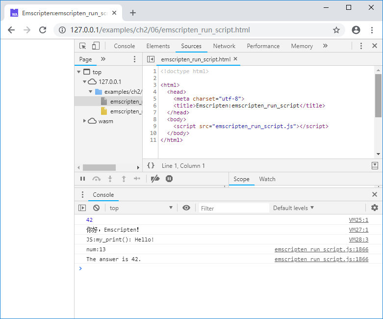

2.6 Using emscripten_run_script
The EM_ASM and related macros introduced in 2.5 can only accept hard-coded constant strings as inline JavaScript code. If the JavaScript code is created dynamically, we can use emscripten_run_script() and related functions instead. This series of helper functions can be analogized to `eval()' in JavaScript..
2.6.1 emscripten_run_script()
Declaration:
void emscripten_run_script(const char *script)
Parameters:
script: The script to evaluate.
Return type：
- void
The function is very simple to use, for example:
int main(){
emscripten_run_script("console.log(42);");
return 0;
}
emscripten_run_script("console.log(42);"); in the code above is equivalent to eval("console.log(42);") in JavaScript.
Dynamically created script can be eval() too, for example:
const char* get_js_code(){
static char buf[1024];
sprintf(buf, "console.log('你好，Emscripten！');");
return buf;
}
int main(){
emscripten_run_script(get_js_code());
return 0;
}
Since the incoming script will eventually be executed via eval(), the passed script can be any JavaScript code, such as:
emscripten_run_script(R"(
function my_print(s) {
console.log("JS:my_print():", s);
}
my_print("Hello!");
)");
The code above defines a fucntion my_print() first, then calls it to output "Hello!"
tips The example above defines a string using the raw string definition of C++11 standard -
Rprefix. When compiling with theemcccommand, you must add the-std = c++11parameter as shown below:
emcc emscripten_run_script.cc -std=c++11 -o emscripten_run_script.js
2.6.2 emscripten_run_script_int()
Declaration:
int emscripten_run_script_int(const char *script)
Parameters:
script: The script to evaluate.
Return type:
- int
This function is similar to emscripten_run_script(), except that it returns the execution result of the input script as an integer, for example:
int num = emscripten_run_script_int(R"(
function show_me_the_number() {
return 13;
}
show_me_the_number();
)");
printf("num:%d\n", num);
The example above will output:
num:13
2.6.3 emscripten_run_script_string()
Declaration:
char *emscripten_run_script_string(const char *script)
Parameters:
script: The script to evaluate.
Return type:
- char *
This function is similar to emscripten_run_script_int(), except that the return value is a string, for example:
const char* str = emscripten_run_script_string(R"(
function show_me_the_answer() {
return "The answer is 42.";
}
show_me_the_answer();
)");
printf("%s\n", str);
The example above will output:
The answer is 42.
In the glue code we can see that the implemention of emscripten_run_script_string() is as follows:
function _emscripten_run_script_string(ptr) {
var s = eval(Pointer_stringify(ptr)) + '';
var me = _emscripten_run_script_string;
var len = lengthBytesUTF8(s);
if (!me.bufferSize || me.bufferSize < len+1) {
if (me.bufferSize) _free(me.buffer);
me.bufferSize = len+1;
me.buffer = _malloc(me.bufferSize);
}
stringToUTF8(s, me.buffer, me.bufferSize);
return me.buffer;
}
This function allocates space in C/C++ memory to hold the string returned by the incoming script. And it is not difficult to find from the code that when emscripten_run_script_string() is called multiple times, the result of the subsequent call may overwrite the result of the previous call - because me.buffer is reused.
The output of the examples in this section is as follows:
